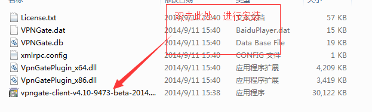
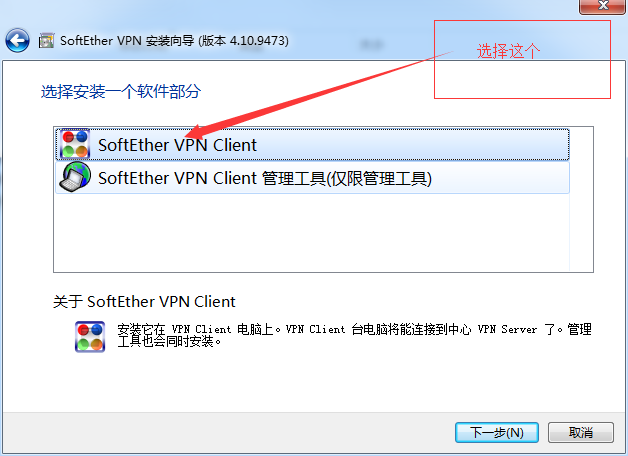
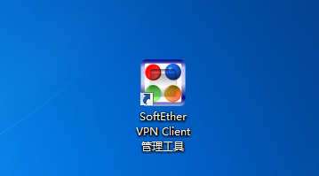
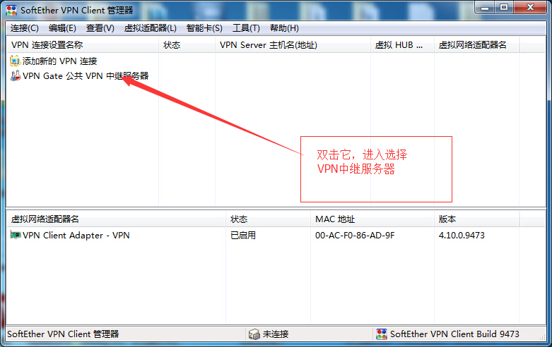
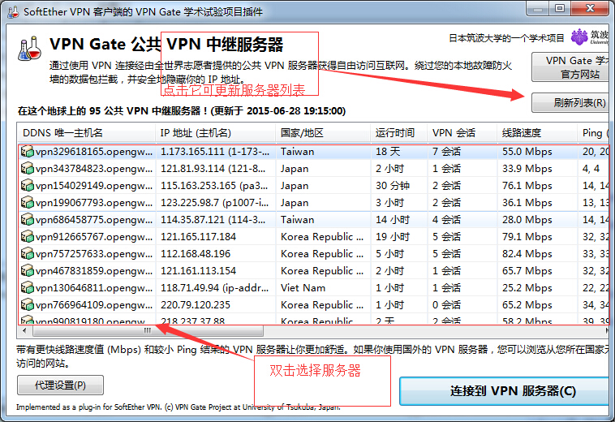
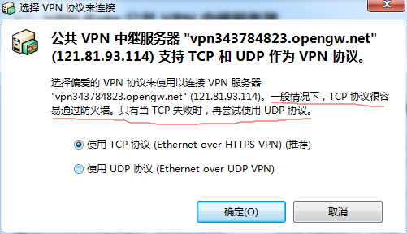
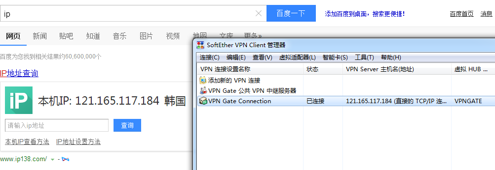
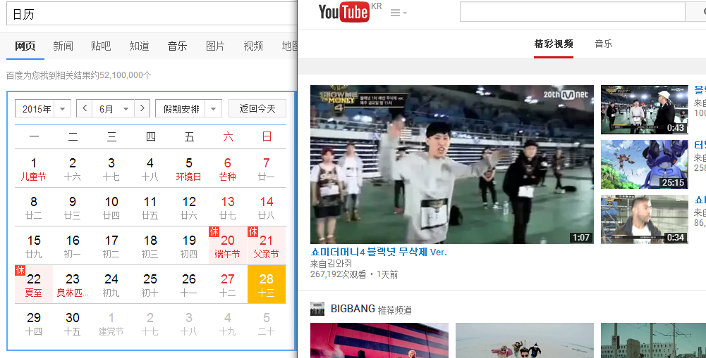

翻墙
关键词： 翻墙 ，VPN，免费
da da da!! 看我变身！！
binge的金刚帅不帅！羡慕不羡慕！这可是我在度娘那里花2分钟淘出来的，绝对的装比利器！嘎嘎......哎？啊！呀！！兄弟们手下留鸡蛋，那可是粮食啊！珍爱粮食人人有责！！~.~ 作为一名优秀的IT人才，浏览国外的某些优秀文章，或者下载开发包，或者查看看我国的历史什么的啊（我家没水表！我没网购！-.-），都需要访问境外的网站，然而我天朝致力于打造全球最大的局域网，让我们这些想下载个sdk，都很困难！今天我将向大家介绍一款VPN，他将免费的帮助我们翻阅山海，直面外面多彩的世界，因为是免费的，所以不稳定，如果你有钱，出门左拐，好多稳定的VPN等着你！OK！废话不多说，让我们开始今天的学习！！！
1. 下载篇
我是软件，快来点我！！ 点击下载上面的连接，进行下载。2. 安装篇
下载成功后，解压压缩包，双击下图指定的安装包，进行安装。
进入安装界面后，直接点击下一步，然后选择下图指定软件部分。

后面的步骤直接点击下一步就可以了，其中有一步，会让你选择安装路径，默认是安装在C，介意的请注意及时更改安装目录。
2. 使用篇
安装成功后，桌面将显示下图所显示的图标，双击它，启动VPN。
VPN主页面如下图所示，双击指定目标进行选择服务器。

选择服务器页面如下图所示，双击任意服务器，进行选择。

点击确定进行尝试连接！

OK!连接成功接！ip是韩国的，嘎嘎，这个也靠人品，有时一次就可连接成功，有时使好多次才会连接成功，good luck！

YouTube是什么？

好了今天所要介绍的就这些了，快去练练手吧！Good Luck！
Good Bye!我们下一篇文章再见！！让我伴随着你们的掌声，华丽丽的离开！！！！！